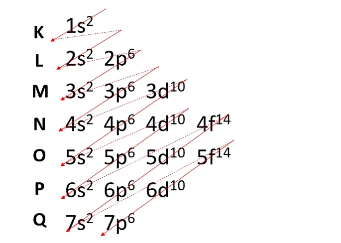

O átomo é a unidade fundamental da matéria e a menor fração capaz de identificar um elemento químico, pois detém sua identidade. O termo átomo deriva do grego e significa indivisível. Ele é formado por um núcleo, que contém nêutrons e prótons, e por elétrons que circundam o núcleo. Estrutura do átomo O átomo é formado por pequenas partículas, também chamadas de partículas subatômicas: elétrons, prótons e nêutrons. A maior parte da massa do átomo concentra-se no núcleo, uma pequena e densa região. O seu maior volume encontra-se na eletrosfera, local de espaços vazios, pois os elétrons orbitam ao redor do núcleo. Elétrons O elétron possui carga elétrica negativa (-1) e quase não possui massa, pois seu valor de 9,11 x 10-28 g e é cerca de 1840 vezes menor que a massa do núcleo. Eles são minúsculas partículas que giram muito rapidamente ao redor do núcleo atômico. Os elétrons que se encontram nas regiões mais externas do átomo é que são responsáveis pela formação das ligações químicas, que ocorrem através da doação, recebimento ou compartilhamento de elétrons. Prótons O próton tem carga elétrica positiva (+1) de mesmo valor absoluto que a carga dos elétrons. Dessa forma, um próton e um elétron tendem a se atrair eletricamente. Através dos prótons é possível distinguir os elementos químicos, pois cada átomo de um elemento apresenta um número definido de prótons em seu núcleo, o qual é chamado de número atômico. Nêutrons O nêutron não tem carga nenhuma, ou seja, é eletricamente neutro. Juntamente com os prótons, ele forma o núcleo atômico, que carrega toda a massa do átomo (99,9%). Tanto o próton quanto o nêutron possuem aproximadamente a massa de 1,67 x 10-24 g. Esse valor representa uma unidade de massa atômica 1 μ. O nêutron proporciona estabilidade ao núcleo atômico, já que a força nuclear faz com que seja atraído por elétrons e prótons. Apenas o átomo de hidrogênio não possui nêutrons, sendo constituído de apenas um elétron girando em torno de um próton.
Um átomo em seu estado fundamental é eletricamente neutro, pois o número de prótons é igual ao número de elétrons e as cargas que são opostas, positivas e negativas, se anulam. Exemplo: o sódio (Na) tem número atômico 11, ou seja, seu núcleo apresenta 11 prótons. Consequentemente, existem 11 elétrons na eletrosfera de um átomo desse elemento. Leia mais sobre a estrutura atômica. Composição do átomo Como vimos, o átomo é formado por uma pequena e densa região central chamada de núcleo e ao redor dele há a eletrosfera, onde se encontram os elétrons, que pode ser dividida em camadas eletrônicas, subníveis energéticos e orbitais atômicos. Camadas eletrônicas O átomo apresenta níveis energéticos, que correspondem a sete camadas em torno de um núcleo e nelas estão os elétrons que orbitam ao redor. As camadas são denominadas de K, L, M, N, O, P e Q. Exemplo: o átomo de hélio (He) tem número atômico 2 e, por isso, apresenta 2 prótons no núcleo. Consequentemente, na eletrosfera do átomo há apenas 2 elétrons, que estão localizados na primeira e única camada eletrônica do átomo, a camada K que corresponde ao primeiro nível de energia. Subníveis energéticos Os níveis de energia abrigam subníveis, que são representados por s, p, d, f. Cada subnível acomoda um número máximo de elétrons, que é respectivamente 2, 6, 10 e 14.  Com essas informações é possível fazer a distribuição eletrônica de um átomo e saber a localização do elétron mais externo e mais energético. Exemplo Número Atômico: 7 Distribuição eletrônica: 1s2 2s2 2p3 O átomo de nitrogênio apresenta dois níveis de energia, K e L, e seus 7 elétrons ocupam os subníveis s e p. K: s2 = 2 elétrons L: s2 + p3 = 5 elétrons Observe que a camada L pode conter até 8 elétrons, mas no átomo de nitrogênio existem apenas 5 elétrons nessa camada.